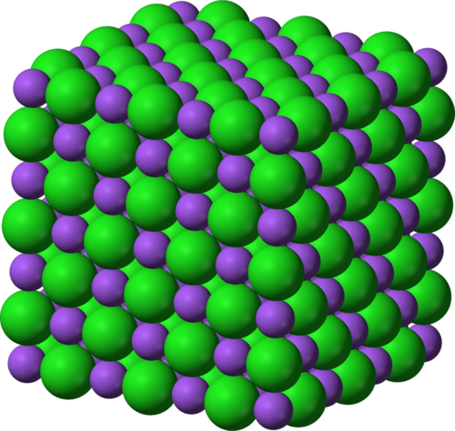
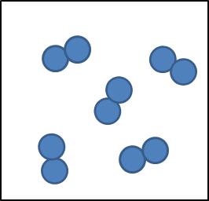

Hierdie hoofstuk begin met hersiening van die belangrikste begrippe aangaande Verbindings, wat in Gr. 8 Materie en Materiale behandel is.
Dit word gevolg deur 'n afdeling oor die Periodieke Tabel, wat die eerste keer in Gr. 7 Materie en Materiale behandel is.
Nuwe inligting sluit die terme Groep en Periode in, asook die waarneming dat elemente van dieselfde groep dieselfde chemiese gedrag toon. Jy sou die Periodieke Tabel kon bespreek as synde 'n klassifikasie tabel van die elemente; 'n organiseringsraamwerk wat ons help om hul eienskappe, en hul ooreenkomste en verskille te verstaan. Leerders sal aan verskillende formate van die Periodieke Tabel bekendgestel word. Die idee is dat leerders moet besef dat inligting op die tabel bygevoeg of weggeneem kan word, afhangende van die doel waarvoor dit gebruik sal word. Dit verander egter nie die posisies van die elemente in die tabel nie. Elemente se posisies is vas.
Dit is 'n verwagting van KABV dat leerders die name en formules van die eerste
20 elemente in die tabel (asook Fe, Cu en Zn) sal ken. KABV vereis nie dat leerders die atoomgetal van elke element memoriseer nie, wat beteken dat die presiese posisie van elk van die 20 elemente in die tabel nie eksamineerbaar is nie.
'n Belangrike punt om op te let is dat, volgens KABV: "elke element op die Periodieke Tabel (in sy eie blok) 'n atoomgetal (kleiner getal), massagetal (groter getal), naam en simbool het". Hierdie stelling is nie heeltemal korrek nie. Die groter getal wat gewoonlik op die tabel aangedui word, is NIE die massagetal (gedefinieer as die somtotaal van die aantal protone en die aantal neutrone ) nie, maar eerder die gemiddelde atoommassa (hierdie getal word gewoonlik tot die naaste heelgetal, of tot een desimale plek afgerond). Ten einde die subtiele, maar belangrike verskil tussen massagetal en gemiddelde atoommassa te verstaan, moet ons 'n bietjie agtergrond verskaf: Op hierdie stadium is die leerders onder die indruk dat alle
atome van 'n gegewe element identies is. Streng gesproke, is dit nie waar nie. Alle elemente bestaan as twee of meer isotope. Isotope is variante van 'n bepaalde chemiese element: terwyl alle isotope van 'n gegewe element dieselfde aantal protone en elektrone deel, verskil elke isotoop van die ander ten opsigte van sy getal neutrone. Dit sou dus nie sin maak om die massagetal op die tabel aan te dui nie, aangesien die massagetal verskillend is vir verskillende isotope van 'n chemiese element. Die gemiddelde atoommassa is 'n getal wat die massas van al die verskillende isotope van 'n gegewe element in ag neem, ASOOK die verhouding waarin elkeen in die natuurlike vorm van daardie element voorkom. Dit is belangrik om nie die twee begrippe, massagetal en gemiddelde atoommassa, te versmelt nie, aangesien dit in die hoër grade as 'n wanbegrip manifesteer wanneer dit belangrik raak vir leerders om die verskil tussen hulle te ken. In die onderstaande teks sal ons die term 'atoommassa' in plaas van 'massagetal'
gebruik, aangesien dit 'n meer korrekte beskrywing is van die 'groter getal' wat gewoonlik op die Periodieke Tabel voorkom.
In die laaste afdeling van die hoofstuk keer ons terug na chemiese formules, wat vlugtig behandel is in Gr. 8 Materie en Materiale (Atome).
Ons het weereens heelwat 'sub-mikroskopiese' diagramme ingesluit om leerders te help om 'n denkbeeld te vorm van die klein entiteite waaroor hierdie hoofstuk handel. Leerders sal heel waarskynlik hulp benodig om tussen die simboliese (formules) en sub-mikroskopiese (molekulêre diagramme) voorstellings te wissel. Dit is 'n baie belangrike vaardigheid wat op hierdie stadium noukeurige aandag behoort te kry, aangesien dit die leerders se kanse sal verbeter om die ingewikkeldhede van die vak in die hoër grade onder die knie te kry. Ons het weereens aktiwiteite ingesluit waarin leerders molekules moet bou met behulp van kunsklei of speelklei, ten einde hierdie vaardigheid te versterk.
Die Speelkleiresep wat in Gr. 8 Materie en Materiale verskaf is, is gerieflikheidshalwe hier ingesluit.
Speelkleiresep
BESTANDDELE:
2 koppies meel
2 koppies warm water
1 koppie sout
2 eetlepels kookolie
1 eetlepel kremetart (opsioneel vir meer elastisiteit)
verskillende kleure voedselkleursel
METODE:
Meng al die bestanddele en roer oor lae hitte. Die deeg sal begin dikker word totdat dit soos kapokaartappels lyk.
Wanneer die deeg wegtrek van die kante en 'n klont in die middel vorm, verwyder die pan van die hitte en laat die deeg toe om genoeg af te koel om te kan hanteer. Let wel: as die deeg nog klewerig is, kan dit eenvoudig langer gekook word.
Keer die deeg uit op 'n skoon oppervlak en knie totdat dit glad is. Verdeel die deeg in balletjies om te kleur.
Maak 'n duikie in die middel van die balletjie en gooi 'n bietjie kleursel daarin. Werk die kleursel deur die deeg en voeg nog by as jy 'n donkerder kleur wil hê.
1.1 Elemente en verbindings (0.5 ure)
Take
Vaardighede
Aanbeveling
Aktiwiteit: Skryf formules en hersiening
Skryf van simbole/formules, interpretasie van diagram
Opsioneel (Hersiening)
1.2 Die Periodieke Tabel (1 uur)
Take
Vaardighede
Aanbeveling
Aktiwiteit: Elemente in die Periodieke Tabel
Memorisering van name en simbole van die eerste 20 elemente
KABV voorgestelde
1.3 Name van verbindings (1.5 ure)
Take
Vaardighede
Aanbeveling
Aktiwiteit: Benoem verbindings van metale en nie-metale
Interpretasie, skryf van name
KABV voorgestelde
Aktiwiteit: Skryf name van die formules van verbindings
Interpretasie, benaming van verbindings, bou van modelle, teken
KABV voorgestelde
Aktiwiteit: Skryf formules van die name van verbindings
Interpretasie, skryf van formules, bou van modelle, teken
KABV voorgestelde
Wat is 'n verbinding?
Hoe verskil 'n verbinding van 'n element?
Hoe verskil 'n mengsel van elemente van 'n verbinding?
Wat sê die posisie van 'n element in die Periodieke Tabel vir ons van sy eienskappe?
Waar vind ons metale, nie-metale en halfmetale in die Periodieke Tabel?
Wat word die vertikale kolomme van die Periodieke Tabel genoem?
Wat word die horisontale rye van die Periodieke Tabel genoem?
Wat het elemente wat tot dieselfde 'groep' van die Periodieke Tabel behoort, in gemeen?
Watter addisionele inligting aangaande 'n element kan ons op die Periodieke Tabel vind?
Wat vertel die formule van 'n verbinding vir ons daarvan?
Elemente en verbindings
verbinding
kristalrooster
element
diatomies
molekule
Hierdie eerste afdeling is 'n hersiening van dit wat in vorige grade behandel is. Dit beslaan etlike bladsye, maar is grotendeels hersiening en is as verwysing vir die leerders ingesluit. Jy sal, afhangende van jou klas, moet besluit hoeveel tyd jy aan die hersiening van hierdie onderwerpe moet bestee, en of jy jou leerders gaan aansê om die inhoud deur te lees en die aktiwiteit aan die einde te voltooi.
Kan jy onthou dat jy in Gr. 8 Materie en Materiale van verbindings geleer het? Ons sal hierdie hoofstuk begin deur sommige van die belangrikste begrippe in verband met elemente en verbindings van Gr. 7 en 8 op te som en te hersien. Dit sal ons help om die nuwe begrippe in hierdie hoofstuk te koppel aan dit wat ons reeds weet.
Die partikels waaruit verbindings bestaan
Leerders moet daarop gewys word dat verbindings kan voorkom as twee tipes strukture, naamlik molekules en kristalroosters
Wanneer 'n verbinding uitsluitlik uit nie-metale bestaan (CO2, H2O, of NH3, byvoorbeeld), sal die kleinste eenheid van daardie verbinding 'n molekule wees.
Wanneer 'n verbinding egter uit 'n metaal en 'n nie-metaal saamgestel is (NaCl, of CuO, byvoorbeeld), is die tipe binding in die verbinding anders. Gedurende binding, ruil die metaal- en nie-metaalatome elektrone uit om ione te vorm. As gevolg van die aantrekking tussen teenoorgestelde ladings, word hierdie ione in groot driedimensionele kristalle of roosters saamgepak, eerder as om eenvoudige molekules te vorm.
Ons verwys in hierdie afdeling vlugtig na kristalroosters om die wanbegrip dat NaCl en ander ioniese verbindings uit molekules bestaan, later te vermy. Leerders moet weet dat NaCl, byvoorbeeld, bestaan uit 'n reëlmatige rangskikking van natrium- en chlooratome in 'n 1:1 verhouding saamgestel en gepak om 'n kristalstruktuur te vorm.
Die partikels van 'n verbinding bestaan altyd uit twee of meer atome. In Fisiese Wetenskappe Gr. 10 sal jy leer dat hierdie atome op verskillende maniere verbind. In sommige gevalle kan hulle molekules vorm. Jy sal onthou dat 'molekule' die woord is wat wetenskaplikes gebruik vir 'n groep atome wat op 'n spesifieke manier aan mekaar vassit. Ander verbindings bestaan uit atome wat gerangskik is in 'n reëlmatige patroon, word 'n kristalrooster genoem.
Die molekules van 'n verbinding bestaan altyd uit twee of meer verskillende atome, soos die molekules van water in die volgende diagram.
Watermolekules.
Verbindings wat kristalroosters vorm bestaan uit baie atome, maar hulle verbind altyd in 'n vaste verhouding. Byvoorbeeld, in natriumchloried (tafelsout) is daar een chlooratoom vir elke natriumatoom in die kristal. Die kleinste 'eenheid' wat in die kristal herhaal word, bestaan uit een Na en een Cl. Die formule NaCl verteenwoordig een 'formule-eenheid' van NaCl.
'n Natriumchloriedkristalrooster bestaande uit natrium- (pers) en chlooratome (groen) in 'n vaste verhouding.
Uit die bostaande diagram van die watermolekules en die natriumchloriedrooster kan ons sien dat 'n verbinding nie slegs 'n mengsel van elemente is nie. 'n Mengsel van die elemente waterstof en suurstof sou so lyk:
'n Mengsel van waterstof- en suurstofmolekules
Waarom kom die waterstof- en suurstofatome in die bostaande diagram as pare voor? Voordat ons daardie vraag beantwoord, is daar eers 'n belangrike herinnering: Elemente bestaan uit slegs een tipe atoom.
Sommige elemente bestaan as diatomiese molekules, soos dié in die diagram regs onder en die waterstof- en suurstofmolekules in die 'mengsel' diagram hierbo. Die belangrikste voorbeelde van diatomiese molekules is H2, N2, O2, F2, Cl2, Br2, en I2. Diatomies beteken dat dit uit twee atome bestaan.
Sommige elemente bestaan as diatomiese molekules.
Kan jy sien dat die watermolekules in die diagram hierbo almal identies is? Dit bring ons by die volgende aspek van molekules.
Die atome in molekules en roosters is in 'n vaste verhouding verbind
In water, byvoorbeeld, het een suurstofatoom (O) met twee waterstofatome (H) verbind. Alle watermolekules is in hierdie opsig presies dieselfde.
Alle watermolekules bestaan uit een O-atoom en twee H-atome en dit gee aan water sy spesifieke eienskappe.
Enige ander kombinasie van waterstof- en suurstofatome sou NIE water wees nie. Byvoorbeeld, waterstofperoksied bestaan uit dieselfde elemente as water (waterstof en suurstof), maar die verhouding is anders: twee suurstofatome het verbind met twee waterstofatome.
Die waterstofperoksiedmolekule bestaan uit twee O-atome en twee H-atome. Dit gee aan waterstofperoksied ander eienskappe as dié van water.In die kristalrooster van swart ysteroksied, is daar een ysteratoom (Fe) vir elke suurstofatoom (O).
Die volgende belangrike aspek van verbindings is die volgende.
Aktiwiteit: Skryf formules van die name van verbindings
Water kan deur die formule H2O voorgestel word. Die formule sê vir ons dat twee waterstofatome (H) aan een suurstofatoom (O) in 'n molekule water verbind is.
Wat is die formule vir waterstofperoksied? Kan jy die naam van die verbinding met die formule CO2 onthou? Onthou om aantekeninge te maak van dit wat in die klas bespreek word!
Die formule vir waterstofperoksied is H2O2. Die formule CO2 is koolstofdioksied.
Watter formule verteenwoordig een 'formule-eenheid' van die tipe ysteroksied in die vorige diagram?
Wat sê die posisie van 'n element in die Periodieke Tabel vir ons van sy eienskappe?
Die atome in 'n verbinding word bymekaar gehou deur chemiese bindings
chemiese binding
reaktant
produk
chemiese formule
Wat hou die groepe atome wat ons molekules noem, bymekaar? Wanneer atome verbind om molekules te vorm, doen hulle dit omdat hulle 'n onderlinge aantrekkingskrag ondervind. Die kragte, wat atome bymekaar hou, word chemiese bindings genoem.
Nou moet ons herinner word aan waar verbindings vandaan kom.
Verbindings vorm gedurende chemiese reaksies
In alle chemiese reaksies herrangskik die atome in molekules hulsef om nuwe molekules te vorm. Dit is hoe verbindings vorm: die atome in een stel verbindings skei namate die bindings tussen hulle breek, en hulle word in nuwe groepe herrangskik namate nuwe bindings vorm. Wanneer dit gebeur, sê ons dat 'n chemiese reaksie plaasgevind het. Beskou die volgende illustrasie.
In die voorbeeld hierbo, word die elemente links van die pyl die reaktante genoem. Hulle het herrangskik om 'n nuwe verbinding te vorm. Dit word die produk genoem en word regs van die pyl aangedui.
Kan jy beskryf wat gebeur het met die atome en die bindings in hierdie reaksie? Bespreek watter binding gebreek het, watter bindings gevorm het, en hoe die atome gedurende die reaksie herrangskik is.
Bespreek dit met jou klas. Moedig hulle aan om aantekeninge te maak gedurende julle besprekings.
Die binding tussen die twee rooi atome het gebreek.
Die swart atoom het tussen die twee rooi atome inbeweeg.
Twee nuwe bindings het gevorm: tussen die swart atoom en elk van die twee rooi atome.
Die laaste aspek van verbindings wat ons in Gr. 8 geleer het, was dat elke verbinding deur 'n unieke chemiese formule voorgestel kan word:
'n Verbinding het 'n chemiese formule
Vergelyk die formule vir water met die diagram van die watermolekule wat jy vroeër gesien het. Kan jy die verband sien?
Die chemiese formule van 'n verbinding is dieselfde vir al die molekules van daardie verbinding. Wanneer ons die formule lees, sê die onderskrifte, ook bekend as die voetskrifte, vir ons hoeveel atome van 'n spesifieke element daar in een molekule van daardie verbinding is:
Wanneer ons H2O skryf, bedoel ons eintlik H2O1. Volgens konvensie gebruik ons nie 1 as voetskrif in formules nie en die eerste formule is die korrekte een. Wat dit beteken is dat daar 2 waterstofatome vir elke 1 suursof is. Dit is ook 'n verhouding en kan as 2:1 geskryf word. Ons sal in die volgende aktiwiteit oefen om formules te skryf.
Skryf van formules en hersiening
INSTRUKSIES:
In die volgende tabel word die name van 'n paar suiwer stowwe in die linker kolom gegee. Die middel kolom sê vir ons waarvan een molekule van elke verbinding gemaak is.
Gebruik hierdie inligting om die formule van elke verbinding in die regter kolom te skryf.
Die eerste ry is reeds as 'n voorbeeld vir jou ingevul:
Kolom 1 bevat die naam: water
Kolom 2: een molekule water bevat twee H-atome en een O-atoom.
Kolom 3: Met die inligting in kolom 2, kan ons die volgende fomule skryf: H2O
Naam van stof
Waarvan is dit gemaak?
Chemiese formule
water
2 H-atome en 1 O-atoom
H2O
koolstofdioksied
1 C-atoom en 2 O-atome
ammoniak
1 N-atoom en 3 H-atome
metaan
1 C-atoom en 4 H-atome
Naam van stof
Waarvan is dit gemaak?
Chemiese formule
water
2 H-atome en 1 O-atoom
H2O
koolstofdioksied
1 C-atoom en 2 O-atome
CO2
ammoniak
1 N-atoom en 3 H-atome
NH3
metaan
1 C-atoom en 4 H-atome
CH4
VRAE:
Wat hou die atome in 'n verbinding bymekaar?
'n Chemiese binding hou die atome bymekaar.
Die volgende diagram toon hoe koolstof en suurstof reageer om koolstofdioksied te vorm.
Wat is die reaktante en wat is die produk in hierdie reaksie? Vul hierdie name op die diagram in.
die reaktante is koolstof (grys sirkel) en suurstof (rooi sirkels) en die produk is koolstofdioksied.
Waarom word suurstof deur twee gesamentlike sirkels voorgestel?
Die twee sirkels verteenwoordig elkeen 'n suurstofatoom aangesien suurstof 'n diatomiese molekule is, wat beteken dat dit uit twee suurstofatome bestaan wat aanmekaar gebind is in diatomiese molekules.
Magnesiumoksied het die formule MgO. Wat sê hierdie verhouding vir ons van die atome in die verbinding?
Dit beteken dat daar aan elke 1 magnesiumatoom 1 suurstofatoom gekoppel is in 'n chemiese binding.
Noudat ons geheue opgeskerp is, gaan ons terugkeer na die tabel wat wetenskaplikes gebruik om hul kennis van die elemente te organiseer. Kan jy onthou wat dit genoem word?
Die Periodieke Tabel
Die eerste deel van hierdie afdeling is hersiening van dit wat in vorige grade behandel is.
Periodieke Tabel
simbool (of elementsimbool)
atoomgetal
unieke
Ons het in Gr. 7 vir die eerste keer van die Periodieke Tabel gehoor. Hier is 'n opsomming van dit wat ons reeds weet:
Al die elemente wat bekend is kan in 'n tabel, bekend as die Periodieke Tabel, gerangskik word.
Die ontdekkings van baie wetenskaplikes oor baie jare het bygedra tot die inligting in die Periodieke Tabel, maar die weergawe van die tabel wat ons vandag gebruik, is oorspronklik deur Dmitri Mendeleev in die 1800's voorgestel.
Elke element het 'n vaste posisie in die Periodieke Tabel. Die elemente is in volgorde van toenemende atoomgetal gerangskik, met die ligste element (waterstof: H) in die boonste linkerhoek.
'n Element se posisie in die Periodieke Tabel sê vir ons of dit 'n metaal, 'n nie-metaal of 'n halfmetaal is.
metale word aan die linkerkant van die tabel gevind;
nie-metale word heel regs in die tabel gevind; en
Al die tabelle het rye en kolomme. Kan jy die verskil onthou tussen vertikaal en horisontaal? Teken kort lyne om die verskil tussen 'vertikaal' en 'horisontaal' in die volgende tabel aan te toon.
'n Element kan op 3 verskillende maniere geïdentifiseer word:
elke element het 'n unieke naam;
elke element het 'n unieke chemiese simbool; en
elke element het 'n unieke atoomgetal.
Metale is gewoonlik blink, rekbaar, en smeebaar. Die meeste is vaste stowwe by kamertemperatuur en het hoë smelt- en kookpunte.
Nie-metale kan vaste stowwe, vloeistowwe of gasse by kamertemperatuur wees. Hulle het 'n groot verskeidenheid van eienskappe wat gewoonlik afhang van die fase waarin hulle is.
Die halfmetale is almal vaste stowwe by kamertemperatuur. Hulle het gewoonlik 'n kombinasie van metaal- en nie-metaaleienskappe.
Ons het in Gr. 7 geleer van die oorsprong van die Periodieke Tabel. Laat ons nou ook hersien wat ons toe geleer het, sodat ons 'n stewige basis het vir ons nuwe werk.
Die Periodieke Tabel is basies 'n kaart wat wetenskaplikes gebruik om die bekende elemente te lys. Die tabel bestaan uit individuele teëls vir elkeen van die elemente. Watter inligting kan ons op die Periodieke Tabel vind? Dit is waaroor dit in die volgende afdeling gaan.
Watter inligting kan ons op die Periodieke Tabel vind?
Die inligting wat gewoonlik op elke teël van die Periodieke Tabel verskyn, is die volgende:
Die chemiese simbool; en
Die atoomgetal
Die onderstaande diagram toon 'n voorbeeld van een van die teëls in die Periodieke Tabel. Kan jy die element wat dit verteenwoordig identifiseer? Hoeveel protone het dit in sy atome?
C is koolstof. Dit het 6 protone (deur die atoomgetal aangedui).
'n Voorbeeld van een van die teëls in die Periodieke Tabel
Die atoomgetal (Z) word gewoonlik bo-aan elke teël vir 'n element in die Periodieke Tabel geskryf, en die groter atoommassagetal (A) word onderaan elke teël geskryf
'n Groot weergawe van die Periodieke Tabel is op die binneste omslag van jul werkboeke gedruk vir gerieflik naslaan.
Daar is verskillende weergawes van die Periodieke Tabel, wat elk ander inligting in verband met die elemente kan bevat. Kan jy identifiseer watter inligting van die elemente in die volgende tabel verskaf word?
Die tabel bevat slegs die chemiese simbool en atoomgetal van elke element.
Die volgende Periodieke Tabel toon slegs die simbole vir die elemente.
Ander weergawes van die Periodieke Tabel mag addisionele inligting bevat, soos:
Die elementnaam; en/of
Die atoommassa, gewoonlik onderaan elke teël vir 'n element aangedui.
Die onderstaande diagramme toon voorbeelde van hoe hierdie inligting soms voorgestel word.
Hierdie teël toon inligting oor die element koper
'n Interaktiewe skakel op die Periodieke Tabel. Klik op elke element om heelwat interessante inligting daaroor te sien.bit.ly/14nnga0
Hoe is die elemente in die Periodieke Tabel gerangskik?
metaal
nie-metaal
halfmetaal
groep
periode
elektrone
neutrone
protone
Ons het geleer dat die elemente op 'n baie spesifieke wyse in die Periodieke Tabel gerangskik is.
Die elemente is in volgorde van toenemende atoomgetal gerangskik. Die element met die kleinste atoomgetal is waterstof (H: atoomgetal = 1) in die boonste linkerhoek van die tabel. Die elemente met die hoogste atoomgetalle word aan die onderkant van die tabel gevind.
Die elemente word ook in blokke gerangskik en hierdie blokke word dikwels met verskillende kleure voorgestel. Die volgende Periodieke Tabel wys ons waar die metale, nie-metale en halfmetale gevind kan word.
Ons kan opsom:
Die metale word gevind aan die linkerkant van die Periodieke Tabel en strek feitlik oor die hele tabel, behalwe die boonste regterhoek. In die tabel hierbo is die metale blou.
Die nie-metale word in 'n relatief klein, driehoekige area in die boonste regterkant van die tabel gevind. In die bostaande tabel is die nie-metale rooi.
'n Paar elemente wat metaal- en nie-metaaleienskappe het (die halfmetale genoem) skei die metale van die nie-metale. Hulle kom in 'n diagonale strook aan die regterkant van die tabel voor. In die bostaande tabel is die halfmetale geel.
Daar word ook soms na die halfmetale as die metalloïede verwys.
Noudat ons hersien het wat ons reeds in vorige grade geleer het, kan ons 'n paar nuwe eienskappe van die Periodieke Tabel aanleer.
Al die tabelle het rye en kolomme. Kan jy die verskil onthou tussen vertikaal en horisontaal? Teken kort lyne om die verskil tussen 'vertikaal' en 'horisontaal' in die volgende tabel aan te toon.
Vertikaal
Horisontaal
Leerders behoort die volgende te teken:
Vertikaal
Horisontaal
Vertikaal loop 'op en af', en horisontaal loop 'van kant tot kant'. In 'n konvensionele tabel loop die kolomme vertikaal, en die rye loop horisontaal.
Daar is spesiale woorde wat die kolomme en rye van die Periodieke Tabel beskryf. Die volgende diagram wys wat die kolomme en rye genoem word.
Groepe: Die vertikale kolomme van die Periodieke Tabel word groepe genoem. Die groepe in die Periodieke Tabel word op so 'n manier genommer dat Groep 1 aan die linkerkant is. Hoeveel groepe is daar?
Daar is 18 groepe.
Die groepe is van 1 tot 18 genommer. Op ouer tabelle is die groepe op 'n ingewikkelder wyse genommer. Die kleurvolle Periodieke Tabel van Gr. 7 (vroeër getoon) is 'n voorbeeld van die nommeringstyl wat jy in ouer handboeke en ander wetenskaplike bronne sou kon vind.
Periodes: Die horisontale rye van die Periodieke Tabel word periodes genoem. Die eerste periode is aan die bokant van die tabel. Wat is die eerste element in die derde periode?
Dit is natrium (Na).
Watter element is in Groep 14 en in die tweede periode? Skryf sy simbool en naam.
Dit is C, koolstof.
Name en chemiese simbole
In Gr. 7 het ons geleer dat elke element 'n unieke naam het. Ons het ook geleer dat elke element 'n unieke simbool het. Daar is 'n lysie van eenvoudige reëls om te onthou wanneer chemiese simbole gebruik word:
Elke element het sy eie, unieke simbool.
Die simbool is gewoonlik (maar nie altyd nie) die eerste een of twee letters van die naam van die element.
Die eerste letter van die simbool is altyd 'n hoofletter.
As die simbool twee letters het, is die tweede letter altyd 'n kleinletter.
Sommige elemente het simbole wat van hul Latynse name afgelei is.
Daar word van ons as wetenskaplikes verwag om die name en simbole van al die belangrikste elemente te ken. Daar sal nie van jou verwag word om nou reeds almal uit die kop te leer nie, maar teen die einde van hierdie hoofstuk moet jy die name en chemiese simbole van die eerste 20 elemente in die tabel ken. Om hulle 'n bietjie makliker te maak om te onthou, is hulle hieronder in 'n tabel geplaas.
Jy moet die name en simbole van die eerste 20 elemente in die Periodieke Tabel ken, asook yster, koper en sink.
INSTRUKSIES:
Gebruik jou Periodieke Tabel om die volgende tabel te voltooi.
Skryf die chemiese simbool en naam vir elkeen van die eerste 20 elemente, geïdentifiseer deur hul atoomgetalle.
Atoomgetal
Chemiese simbool
Elementnaam
1
2
3
4
5
6
7
8
9
10
11
12
13
14
15
16
17
18
19
20
Atoomgetal
Chemiese simbool
Elementnaam
1
H
Waterstof
2
He
Helium
3
Li
Litium
4
Be
Berillium
5
B
Boor
6
C
Koolstof
7
N
Stikstof
8
O
Suurstof
9
F
Fluoor
10
Ne
Neon
11
Na
Natrium
12
Mg
Magnesium
13
Al
Aluminium
14
Si
Silikon
15
Jy moet die name en simbole van die eerste 20 elemente in die Periodieke Tabel ken, asook yster, koper en sink.
Fosfor
16
S
Swawel
17
Cl
Chloor
18
Ar
Argon
19
K
Kalium
20
Ca
Kalsium
Daar is drie belangrike industriële metale waarvan jy die name en formules moet ken. Hul atoomgetalle is in die tabel hier onder ingevul. Voltooi die tabel deur die chemiese simbole en elementname in te vul.
Atoomgetal
Chemiese simbool
Elementnaam
26
29
30
Atoomgetal
Chemiese simbool
Elementnaam
26
Fe
Yster
29
Cu
Koper
30
Zn
Sink
VRAE:
Hierdie dien ook as hersiening van dit wat in Gr. 8 in verband met die atoom behandel is.
Wat sê die atoomgetal vir ons van die atome van 'n element?
Dit sê vir ons hoeveel protone daar in die atome is.
Hoeveel protone is daar in suurstofatome?
Daar is 8 protone (atoomgetal is 8).
Hoeveel neutrone is daar in die meeste suurstofatome?
Daar is ook 8 neutrone.
Leerders sal eers in latere grade van isotope leer, en dit is vir nou voldoende om te weet dat die atoommassa 'n aanduiding gee van die getal nukleone (protone en neutrone), dus vir suurstof is die atoommassa 15.999 (afgerond tot die naaste heelgetal is dit 16), en dus is die getal neutrone = 16 - 8, wat 8 is.
Hoeveel elektrone sal daat in 'n neutrale suurstofatoom wees?
Daar sal 8 elektrone wees.
Op hierdie stadium het leerders nog nie van ione geleer nie, en beskou ons dus slegs neutrale atome waarin die getal elektrone gelyk is aan die getal protone.
Wat is die lading op protone en elektrone?
Elektrone is negatief gelaai en protone is positief gelaai.
Hoe is die protone, neutrone en elektrone (die sub-atomiese partikels) in 'n atoom gerangskik?
Die protone en neutrone wat in die middel saamgebondel is, vorm die kern, terwyl die elektrone 'n veel groter ruimte/wolk/area rondom die kern beset.
Teken 'n model van 'n suurstofatoom in die spasie hieronder. Etiketteer jou diagram.
Leerders moet 'n sentrale kern met 8 protone en 8 neutrone teken, met 8 elektrone wat 'n wolk om die kern vorm. 'n Model van 'n stikstofatoom word hieronder as voorbeeld gegee:
Jy sal wonder waarom die Periodieke Tabel presies 18 groepe het en nie 14 of 10 of enige ander getal nie. Dit is 'n baie goeie vraag! Die eintlike verduideliking is taamlik ingewikkeld, en het te doen met hoe die elektrone binne-in die atoom versprei is. Jy sal in groter detail hiervan leer as jy Fisiese Wetenskappe in Gr. 10 neem.
Alhoewel die elektrone in 'n atoom so vinnig beweeg dat dit nie moontlik is om hul werklike 'posisies' te beskryf nie, kon wetenskaplikes tog patrone in die rangskikking van die elektrone uitwerk. Hierdie patrone herhaal na elke 18de element.
Eienskappe van elemente in dieselfde groep
Elemente van dieselfde groep het dikwels soortgelyke fisiese en chemiese eienskappe. Dit is vir eers genoeg om te weet dat die elektrone in die atome van 'n element die chemiese eienskappe van daardie element bepaal. Aangesien die 'elektronpatrone' na elke 18de element herhaal, is daar 18 groepe. Aangesien die elemente in 'n groep soortgelyke 'elektronpatrone' het, sal hulle eenders optree in chemiese reaksies.
Hier is 'n voorbeeld wat jou sal oortuig van die feit:
Die metale van Groep 1 word die alkalimetale genoem. Kan jy die naam en chemiese simbool van die ligste lid van die groep skryf? Jy kan waterstof ignoreer, wat eintlik 'n nie-metaal is, maar saam met die alkalimetale in die Periodieke Tabel geplaas is omdat dit 'n soortgelyke elektronpatroon het.
Dit is Litium (Li)
Kyk na hierdie video van metaal wat met water reageer!bit.ly/1cH6ADx
Hier is 'n video om onderwysers te help om die eienskappe van alkalimetale te demonstreer, met inbegrip van die brand in lug, en reaksies met water. Dit is 'n lang video, maar die kyk werd. bit.ly/11YFtOe
Litium, en al die ander alkalimetale, is sagte dof-grys metale. Hulle lyk baie eenders en het soortgelyke fisiese eienskappe.
Hierdie elemente reageer almal op 'n baie vreemde wyse met water.
Wanneer ons byvoorbeeld 'n klein stukkie litium in water laat val, sal dit onmiddellik met die water begin reageer. Hier is die chemiese vergelyking vir die reaksie:
2 Li + 2 H2O → 2 LiOH + H2
Die stukkie litiummetaal sal op die oppervlak van die water ronddans, want die reaksie lewer waterstofgas (H2), wat klein borrels onder die litium laat uitstroom. Hitte word ook vrygestel en soms sal die waterstofgas bo-op die water begin brand. Die ander produk wat vorm is litiumhidroksied. Kan jy sy formule in die chemiese vergelyking hierbo vind?
Dit is LiOH.
Skryf die woordvergelyking onder die bostaande chemiese vergelyking.
Leerders behoort die volgende woordvergelyking te skryf: litium + water → litiumhidroksied + waterstofgas.
Wat is die reaktante en die produkte in bostaande chemiese reaksies?
Die reaktante is litium en water en die produkte is litiumhidroksied en waterstofgas.
Vra eerstens vir die leerders waarom hulle dink dit in olie, en nie byvoorbeeld in water nie, gestoor word. Dit is omdat dit baie maklik met water reageer en dit ook met verloop van tyd stadig met suurstof in die lug reageer, en dit dus die beste is om dit in olie te bewaar. Vra vervolgens vir die leerders waarom hulle dink die stukkie litiummetaal in die bottel met olie dryf. Dit is omdat litium die ligste metaal in die heelal is, ligter en minder dig as olie is, en dus dryf. Dit sluit aan by die deeltjiemodel van materie en dit wat in Gr. 8 in verband met digtheid van verskillende materiale behandel is.
Nou is dit interessant dat al die ander alkalimetale op dieselfde wyse optree. Natrium is meer reaktief as litium, en dit dans nie net op die oppervlak van die water rond nie, maar ontvlam ook onmiddellik. Die chemiese reaksie is egter feitlik identies:
2 Na + 2 H2O → 2 NaOH + H2
Kan jy sien hoe eenders hierdie reaksie en die een tussen litium en water is?
Wanneer groot hoeveelhede natrium met water in aanraking kom, is daar 'n ontploffing, soos in hierdie foto waar water op 1,5 kg natrium gegooi is.
Kalium is selfs meer reaktief as natrium, en dit ontplof wanneer dit die oppervlak van die water tref:
Waarop jy hier behoort te let, is dat al hierdie elemente, almal van dieselfde groep, eenders reageer wanneer hulle met water in aanraking kom. Dit is wat ons bedoel as ons sê dat elemente van dieselfde groep eenderse chemiese eienskappe het.
Name van verbindings
KABV vereis dat leerders modelle maak (deur gebruik te maak van krale, boontjies, kunsklei of speelklei) van verskeie elemente en verbindings. Ons het doelbewus die insluiting van aktiwiteite wat die bou of teken van 'molekules' van ioniese verbindings soos NaCl en CuO vereis, vermy. Die rede vir hierdie tipe weglating sluit aan by die nota vroeër waarin verduidelik is dat ioniese verbindings roosters vorm eerder as molekules. Hul fundamentele eenhede word nie molekules genoem nie, maar wel 'formule-eenhede'.
IUPAC
IUPAC-sisteem
sistematiese naam
agtervoegsel
voorvoegsel
Daar is dalk twee of meer mense in jou klas met dieselfde naam? Dan sal jy weet hoe verwarrend dit kan wees as twee mense dieselfde naam het!
Ons het geleer dat elke element 'n unieke naam het. Dit is belangrik, sodat ons nie elemente met mekaar sal verwar nie.
Elke verbinding het 'n unieke naam
Dit is ewe belangrik vir elke verbinding om 'n unieke naam te hê. Die volgende voorbeeld sal jou help om te sien hoekom:
Die twee verbindings CO en CO2 bestaan uit dieselfde twee elemente, koolstof en suurstof. As ons hulle albei 'koolstofoksied' sou noem (aangesien hulle albei van koolstof en suurstof gemaak is), sou ons hulle maklik met mekaar kon verwar. Onder sekere omstandighede sou dit probleme kon veroorsaak, want CO is baie giftiger vir mens en dier as CO2. Dit is dus maklik om in te sien waarom elke verbinding 'n unieke naam moet hê.
Wanneer ons die chemiese formules vir verbindings skryf, is hulle altyd 'n samestelling van die simbole van die elemente in die verbinding. Wanneer ons byvoorbeeld die formule NaCl sien, weet ons dat hierdie verbinding bestaan uit Na en Cl.
Wanneer ons name aan verbindings gee, word die name van die elemente in die verbinding gekombineer en soms effens verander, om 'n naam vir die verbinding te vorm.
Wanneer ons byvoorbeeld die naam natriumchloried hoor, is dit heel duidelik dat die verbinding wat beskryf word uit natrium en chloor moet bestaan. Maar hoekom is dit chloried en nie chloor nie? Wel, soos jy binnekort sal sien, word die naam van die element wat laaste genoem word wanneer die name van die elemente gekombineer word, verander.
Alles hierbo mag baie ingewikkeld klink en daarom is 'n sisteem ontwikkel vir die benaming van verbindings. Die sisteem is deur die International Union of Pure and Applied Chemistry (IUPAC) ontwikkel. Die sisteem is op so 'n wyse ontwerp dat die naam van 'n verbinding die elemente waaruit dit bestaan en hoe hulle saamgestel is, beskryf.
Die IUPAC-sisteem vir die benaming van verbindings is baie kompleks, maar ons hoef nie al die reëls te leer nie. Op hierdie stadium hoef ons slegs te leer hoe om verbindings wat uit twee elemente bestaan, te benoem.
Op hierdie vlak moet ons kan onderskei tussen twee tipes verbindings, want die tipe verbinding bepaal hoe dit benoem moet word.
Tipe 1: Verbindings wat 'n metaal en 'n nie-metaal bevat
Hierdie verbindings word ioniese verbindings genoem op grond van die tipe binding wat hier betrokke is. KABV maak nie op hierdie vlak 'n onderskeid tussen kovalente en ioniese verbindings nie. Dit is enersyds verstaanbaar. Leerders het nog nie van ioniese en kovalente binding in verbindings geleer nie en sou dus nie in staat wees om die onderskeid tussen ioniese en kovalente verbindings te verstaan nie. Andersyds, as daar nie 'n mate van onderskeid duidelik gemaak word nie, sal leerders nie daarin slaag om te verstaan waarom MgO magnesiumoksied genoem word terwyl CO koolstofmonoksied genoem word, of MgCl2 magnesiumchloried genoem word, maar SCl2 swaweldichloried genoem word. Daarom het ons besluit om 'n onderskeid te tref tussen verbindings wat 'n metaal en 'n nie-metaal bevat (ioniese verbindings) en verbindings wat slegs nie-metale bevat (kovalente verbindings).
Hierdie is nie die enigste moontlike kombinasies van elemente nie - 'n halfmetaal kan met 'n nie-metaal verbind, byvoorbeeld in silikondioksied (SiO2) - maar die twee verbindingstipes wat hier bespreek word verteenwoordig die twee algemeenste tipes kombinasies van elemente.
Vir hierdie tipe verbindings is die reël eenvoudig. Die metaal kom eerste en die nie-metaal tweede. Die naam van die nie-metaal verander effens: die agtervoegsel -ied vervang die laaste deel van die naam.
'n Agtervoegsel is iets wat aan die einde van 'n woord geplaas word. 'n Voorvoegsel is iets wat aan die begin van 'n woord geplaas word.
Alle verbindings van hierdie tipe vorm kristalroosters eerder as molekules. Wat noem ons die herhalende 'eenhede' in 'n kristalrooster?
Formule-eenheid
Hier is 'n paar voorbeelde:
Formule
Bestaan uit
Naam
Voorstelling van een formule-eenheid van die verbinding
NaCl
Natrium en chloor
Natriumchloried
FeS
Yster en swawel
Ystersulfied
MgO
Magnesium en suurstof
Magnesiumoksied
LiF
Litium en fluoor
Litiumfluoried
Benaming van metale en nie-metale
INSTRUKSIES:
Verwys na die Periodieke Tabel en voltooi die volgende tabel.
Identifiseer die elemente waaruit die verbinding bestaan en gee die naam van die verbinding.
Formule
Uit watter elemente bestaan dit?
Naam
Li2O
KCl
CuO
NaBr
Formule
Uit watter elemente bestaan dit?
Naam
Li2O
2 Litium en 1 suurstof
Litiumoksied
KCl
1 Kalium en 1 chloor
Kaliumchloried
CuO
1 Koper en 1 suurstof
Koperoksied
NaBr
1 Natrium en 1 broom
Natriumbromied
Tipe 2: Verbindings wat slegs nie-metale bevat
Hierdie tipe verbinding is effens ingewikkelder om te benoem. Daar is drie reëls wat gevolg moet word. Hulle is die volgende:
Reël 1:
Die naam van die element meer na links in die Periodieke Tabel kom eerste, gevolg deur die naam van die element meer na regs in die tabel. Die naam van die tweede element verander effens: die agtervoegsel -ied vervang die laaste deel van die naam.
Byvoorbeeld:
suurstof verander na oksied
fluoor word fluoried
chloor word chloried
stikstof word nitried
Reël 2:
Wanneer twee of meer verbindings verskillende getalle van dieselfde elemente het (soos CO en CO2 in ons voorbeeld hierbo), moet ons voorvoegsels bysit om verwarring te voorkom.
Die eerste vier voorvoegsels word in die onderstaande tabel gegee:
Aantal atome
Voorvoegsel
1
mono-
2
di-
3
tri-
4
tetra-
5
penta-
Die voorvoegsel mono- word gewoonlik weggelaat uit die begin van die eerste woord van die naam. Byvoorbeeld, CO is koolstofmonoksied, nie monokoolstofmonoksied nie.
Hier is 'n paar voorbeelde van hoe hierdie reël toegepas moet word:
Verbindings van koolstof en suurstof:
CO - koolstofmonoksied (let daarop dat dit nie mono-oksied is nie, maar monoksied)
CO2 - koolstofdioksied
Verbindings van stikstof en suurstof:
NO2 - stikstofdioksied
N2O4 - distikstoftetroksied (het jy opgelet tetraoksied word tetroksied?)
Verbindings van swawel en suurstof:
SO2 - swaweldioksied
SO3 - swaweltrioksied
Ons gaan dit wat ons sover geleer het, in die volgende twee kort aktiwiteite oefen. Eerstens sal ons name van formules skryf.
Die skryf van name van die formules van verbindings
MATERIALE:
speelklei, boontjies of krale
INSTRUKSIES:
Hoe sou jy die volgende verbindings benoem? Skryf die naam langs elke formule in die onderstaande tabel.
Bou een molekule van elke verbinding met speelklei, boontjies of krale. As jy nie seker is hoe om die atome te rangskik nie, is hier 'n belangrike wenk: die atoom wat eerste in die naam kom (dit sal gewoonlik ook die eerste atoom in die formule wees) moet in die middel van die molekule geplaas word. Al die ander atome moet rondom dit geplaas word. Hulle sal aan die atoom in die middel gebind wees, maar nie aan mekaar nie.
Maak 'n skets van jou molekule in die laaste kolom van die tabel.
Formule van die verbinding
Naam van die verbinding
Voorstelling van een molekule van die verbinding
CO2
PF3
SF4
CCl4
Formule van die verbinding
Naam van die verbinding
Voorstelling van een molekule van die verbinding
CO2
koolstofdioksied
H2O
waterstofdioksied (water)
PF3
fosfortrifluoried
SF4
swaweltetrafluoried
CCl4
koolstoftetrachloried
Die kleure van die atome is nie belangrik nie, solank atome van dieselfde element net dieselfde kleur is. Die groottes is nie krities nie, maar jy sal dalk aan die leerders wil voorstel dat die elemente hoër op in die Periodieke Tabel geneig sal wees om kleiner te wees as dié laer af. As leerders onseker is oor hoe om die atome te plaas, kan hulle gewys word op die wenk wat vroeër gegee is: Die atoom wat eerste in die naam (of formule) kom, moet in die middel van die molekule geplaas word. Al die ander atome moet aan die sentrale atoom gebind wees.
Vervolgens gaan ons formules skryf van die name van 'n paar verbindings
Die skryf van formules van die name van verbindings
MATERIALE:
speelklei
INSTRUKSIES:
Watter formules sal jy aan die volgende verbindings gee? Skryf die formule langs elke naam in die onderstaande tabel.
Bou 'n model van elke verbinding met speelklei.
Skets een molekule van elke verbinding in die laaste kolom van die tabel.
Formule van die verbinding
Naam van die verbinding
Voorstelling van een molekule van die verbinding
waterstoffluoried
diwaterstofsulfied
swaweltrioksied
koolstofmonoksied
Formule van die verbinding
Naam van die verbinding
Voorstelling van een molekule van die verbinding
HF
waterstoffluoried
H2S
diwaterstofsulfied
SO3
swaweltrioksied
CO
koolstofmonoksied
Die kleure van die atome is nie belangrik nie, solank atome van dieselfde element dieselfde kleur is. Die groottes is nie krities nie, maar jy sal dalk aan leerders wou voorstel dat die elemente hoër op in die Periodieke Tabel geneig is om kleiner te wees as dié laer af.
Daar is een bykomstige reël - 'n maklike een om te onthou!
Reël 3:
In die geval van baie verbindings word die sistematiese name nie normaalweg gebruik nie. In plaas daarvan het hulle gewone name wat wyer bekend is. Ons gebruik byvoorbeeld die naam water vir H2O, ammoniak vir NH3, en metaan vir CH4.
In hierdie hoofstuk het ons al die inligting in verband met verbindings en die Periodieke Tabel wat ons in vorige jare geleer het, hersien. Ons het ook nuwe inligting tot beide hierdie onderwerpe toegevoeg. Ons het ook 'n belangrike vaardigheid aangeleer, naamlik om die name en formules van verbindings te skryf en te interpreteer.
Bou 'n paar molekules van verbindings met hierdie simulasie!bit.ly/14CQ4PO
Hier is 'n paar wenke vir onderwysers oor die 'Bou 'n molekule' simulasie. bit.ly/17iXzKG
Opsomming
Elemente
Al die atome in 'n element is van dieselfde tipe. Dit beteken dat 'n element nie na ander elemente verander kan word deur enige fisiese of chemiese proses nie.
Elemente kan bestaan uit individuele atome, of as gebonde pare atome, wat diatomiese molekules genoem word.
Wanneer elemente verbind, vorm hulle verbindings.
Verbindings
In 'n verbinding is twee of meer verskillende tipes atome chemies gebind in 'n bepaalde vaste verhouding.
Die atome waaruit 'n molekule bestaan, word bymekaar gehou deur spesiale aantrekkings, wat chemiese bindings genoem word.
Verbindings kan gevorm en afgebreek word in chemiese reaksies.
'n Chemiese reaksie waarin 'n verbinding afgebreek word na eenvoudiger verbindings en selfs elemente, word 'n ontbindingsreaksie genoem.
Verbindings kan nie deur fisiese prosesse geskei word nie, maar hulle kan in hul elemente (of eenvoudiger verbindings) geskei word deur chemiese prosesse.
Die Periodieke Tabel
Elke element het 'n vaste posisie in die Periodieke Tabel. Die elemente is in volgorde van toenemende atoomgetal gerangskik, met die ligste element (waterstof: H) in die boonste linkerhoek.
'n Element se posisie in die Periodieke Tabel sê vir ons of dit 'n metaal, 'n nie-metaal of 'n halfmetaal is.
metale word aan die linkerkant van die tabel gevind;
nie-metale word heel regs in die tabel gevind; en
Al die tabelle het rye en kolomme. Kan jy die verskil onthou tussen vertikaal en horisontaal? Teken kort lyne om die verskil tussen 'vertikaal' en 'horisontaal' in die volgende tabel aan te toon.
'n Element kan op 3 verskillende maniere geïdentifiseer word:
elke element het 'n unieke naam;
elke element het 'n unieke chemiese simbool; en
elke element het 'n unieke atoomgetal.
Die vertikale kolomme van die Periodieke Tabel word groepe genoem. Die Periodieke Tabel het 18 groepe.
Die horisontale rye van die Periodieke Tabel word periodes genoem. Daar is 7 periodes.
Elemente wat tot dieselfde 'groep' van die Periodieke Tabel behoort, toon dieselfde chemiese gedrag, en sal dikwels dieselfde eienskappe hê.
Daar bestaan baie verskillende weergawes van die Periodieke Tabel. Gewoonlik word die elementsimbool, die atoomgetal en die atoommassa van elke element op die tabel aangegee.
Name en formules
Elke verbinding het 'n unieke naam en formule.
Die formule van 'n verbinding sê vir ons watter elemente in die verbinding voorkom en hoeveel atome van elke element saamgekom het om een molekule van daardie verbinding te vorm.
Daar is reëls vir die benaming van verbindings wat in ag neem hoeveel atome van elke tipe daar in een molekule van die verbinding is.
Konsepkaart
Bestudeer die onderstaande konsepkaart wat opsom wat ons in hierdie hoofstuk in verband met verbindings geleer het.
Hersieningsvrae
Hersieningsvrae
Elkeen van die vier blokke hier onder (gemerk A tot D) bevat materie. Jy moet die volgende vrae beantwoord deur die diagramme in die blokke te gebruik. Elke vraag mag meer as een antwoord hê! [12 punte]
Watter blok verteenwoordig die partikels van 'n element?
C en D
Watter blok verteenwoordig die partikels in 'n verbinding?
A
Watter blok verteenwoordig die partikels in 'n mengsel?
B
Watter blok verteenwoordig diatomiese partikels?
B en D
As die blou atome N is en die wit atome H is, skryf die formule vir die molekules in blok A.
NH3
As die blou atome N is en die wit atome H is, skryf die formule vir die molekules in blok B.
N2 en H2
Watter blok bevat molekules?
A, B en D
Watter blok bevat enkel atome?
C
Wat sou jy die volgende verbindings noem?
Skryf die naam langs elke formule in die onderstaande tabel.
Bou 'n model van elke verbinding met speelklei.
Skets een molekule van elke verbinding in die laaste kolom van die tabel.
[12 punte]
Formule van die verbinding
Naam van die verbinding
Voorstelling van een molekule van die verbinding
NH3
CO2
CuCl2
SO2
Formule van die verbinding
Naam van die verbinding
Voorstelling van een molekule van die verbinding
NH3
ammoniak
CO2
koolstofdioksied
CuCl2
koper(II)chloried
SO2
swaweldioksied
Wat is die formules van die volgende verbindings? [4 punte]
Formule van die verbinding
Naam van die verbinding
natriumchloried
distikstofmonoksied
swaweltrioksied
koolstofmonoksied
Formule van die verbinding
Naam van die verbinding
NaCl
natriumchloried
N2O
distikstofmonoksied
SO3
swaweltrioksied
CO
koolstofmonoksied
Hier is 'n gebalanseerde chemiese vergelyking. Beantwoord die vier vrae hier onder wat betrekking het op hierdie vergelyking: [8 punte]
CO + H2O → CO2+ H2
Skryf die formules van die reaktante van hierdie reaksie.
CO en H2O
Skryf die name van die reaktante van hierdie reaksie.
koolstofmonoksied en water
Skryf die formules van die produkte van hierdie reaksie.
CO2 en H2
Skryf die name van die produkte van hierdie reaksie.
koolstofdioksied en waterstof
Die onderstaande tabel bevat die chemiese formules van 'n paar verbindings. Skryf die getal atome van elke element(e) wat saamgevoeg is in een molekule van elke verbinding. Die eerste ry is vir jou as voorbeeld ingevul. [8 punte]


{kind=link}
{kind=link}